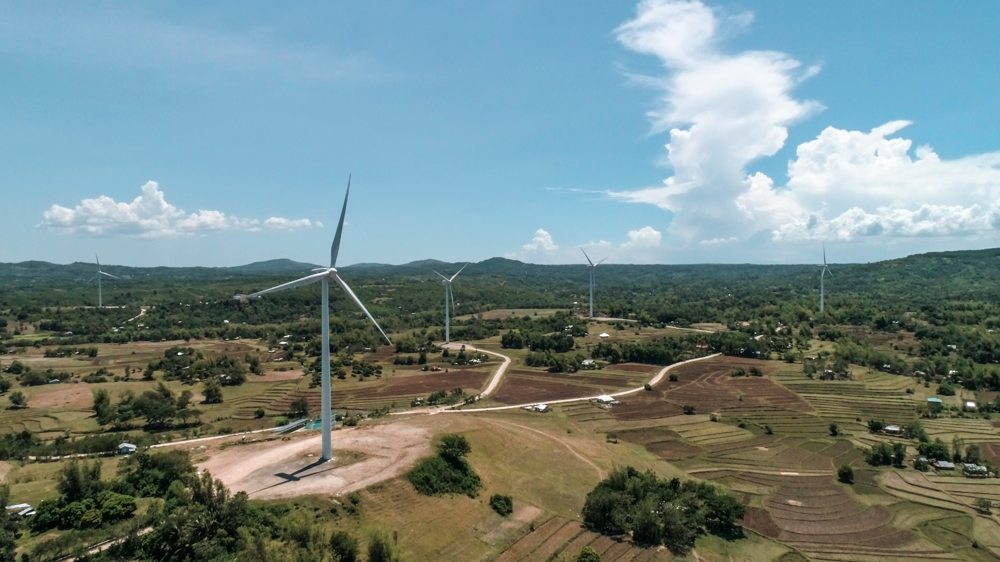
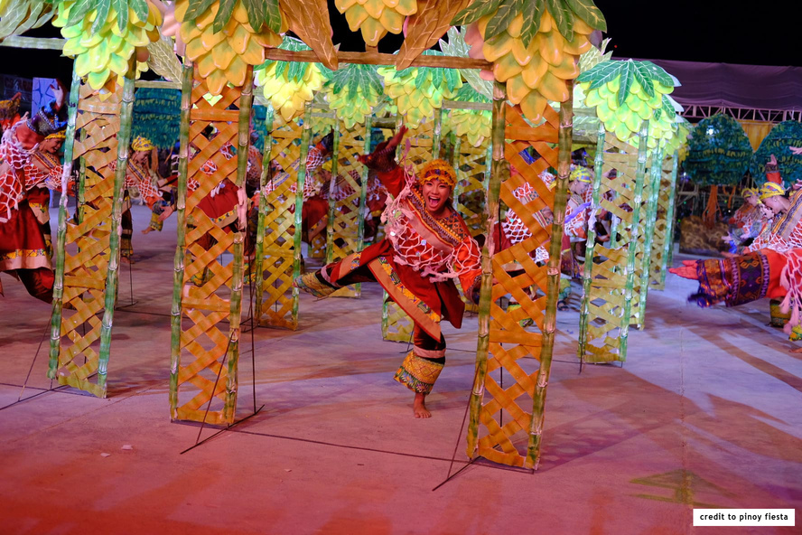
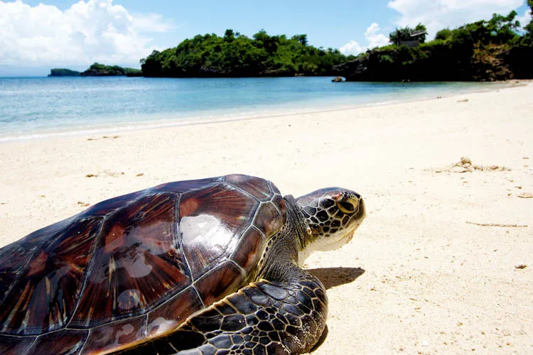
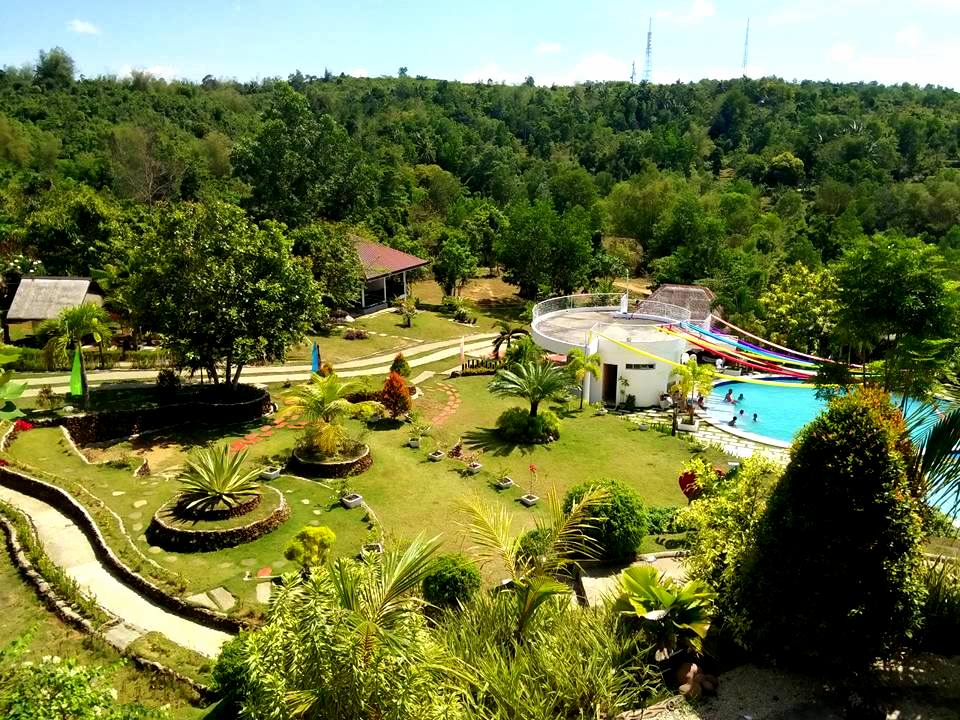
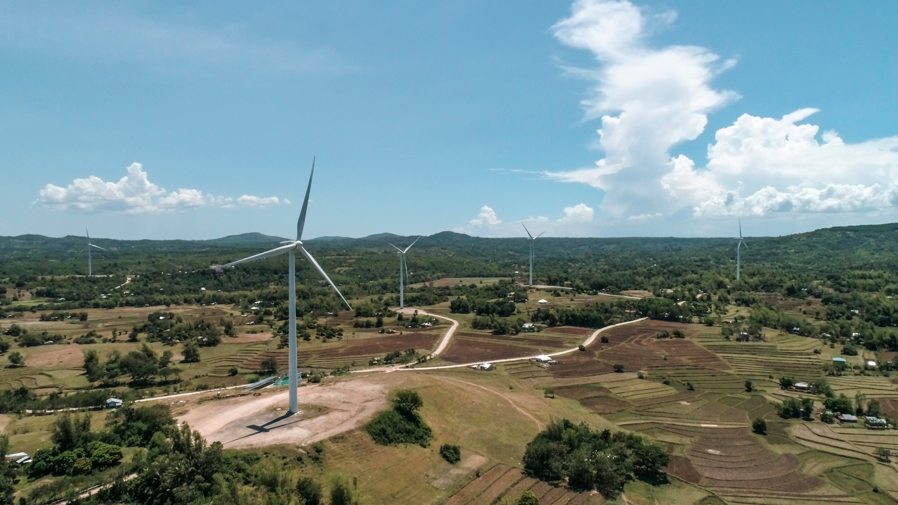
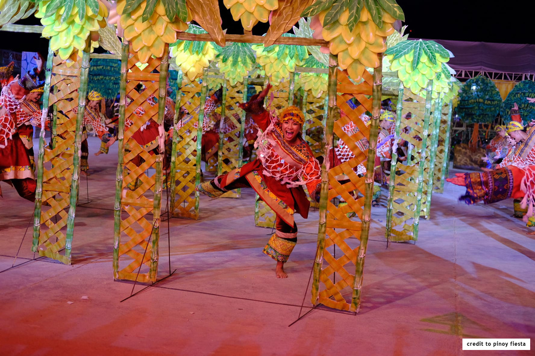
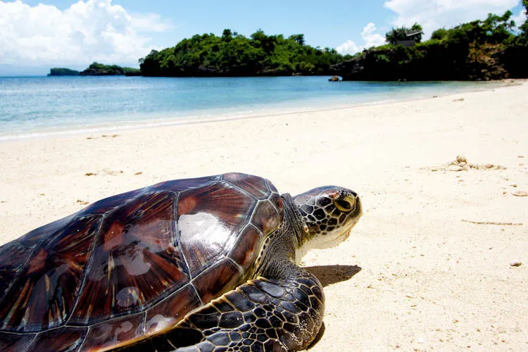
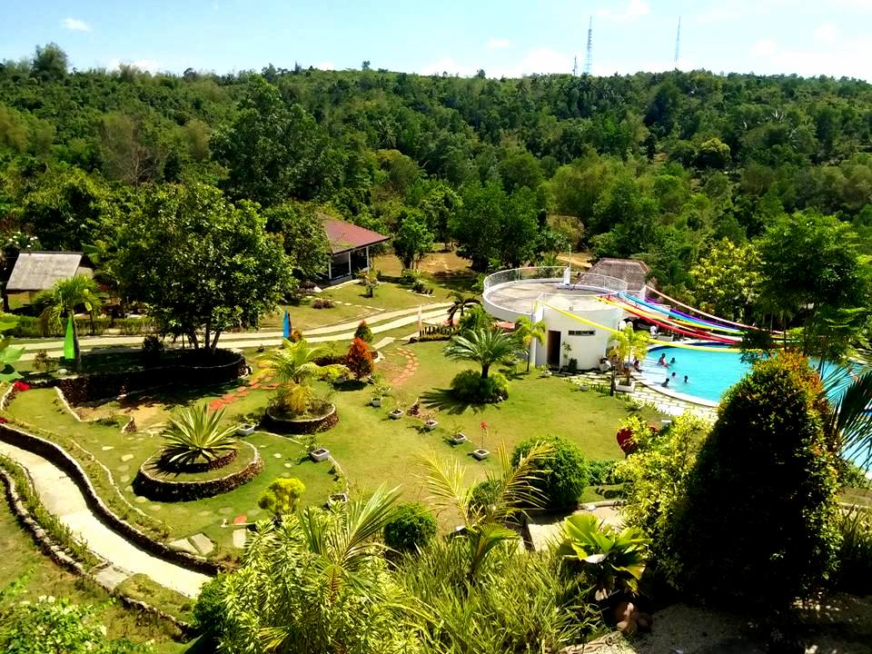

Guimaras Island: A Tropical Paradise
 







Nestled in the heart of the Philippines, Guimaras Island is a hidden gem that beckons travelers seeking an idyllic tropical escape. With its stunning landscapes, pristine beaches, and rich cultural heritage, Guimaras embodies the essence of a true island paradise.
Boasting an area of approximately 604.57 square kilometers, Guimaras Island is located in the Western Visayas region. The island is blessed with a natural splendor that captivates visitors from the moment they set foot on its shores. Lush green hills roll across the landscape, adorned with swaying palm trees and vibrant tropical flora. As the island is relatively untouched by mass tourism, it exudes an air of tranquility and serenity.
For nature enthusiasts, Guimaras offers a myriad of outdoor activities. Explore the island's lush interior by embarking on nature trails that wind through verdant forests and lead to hidden waterfalls. Hike up the slopes of Mt. Dinalman and be rewarded with panoramic views of the surrounding islands. Snorkeling and diving enthusiasts can discover a mesmerizing underwater world teeming with vibrant coral reefs and diverse marine life.
How To Get There
Guimaras can be reached by air and boat from Manila and other origins, via Iloilo City and Pulupandan, Negros Occidental. It can be reached by fastcraft, RORO, and other sea-going vessels via Iloilo Strait which is about 2.5 km. in length and Guimaras Strait from Negros. The origin/destination point in Iloilo City are located in Parola for fastcrafts with regular trips. Travel time is about 10 to 15 minutes. There are regular trips from Guimaras via San Lorenzo, with fastcraft to Negros Occidental and vice-versa via Pulupandan. Once on the island, various modes of transportation, such as tricycles and jeepneys, allow visitors to explore its charming towns and picturesque landscapes.
Guimaras Island is a sanctuary of natural beauty, where time seems to slow down, and worries fade away. Whether you seek a blissful beach getaway, an adventure in the wilderness, or an immersion in local culture, Guimaras offers it all. Its pristine beaches, delectable mangoes, warm hospitality, and breathtaking vistas make it an unforgettable destination. Come and experience the enchantment of Guimaras, where paradise becomes a reality.
Discover Guimaras: Where Paradise Beckons
Embrace Nature's Paradise and Unforgetable Adventures. Plan your journey Today!
Come Visit Us